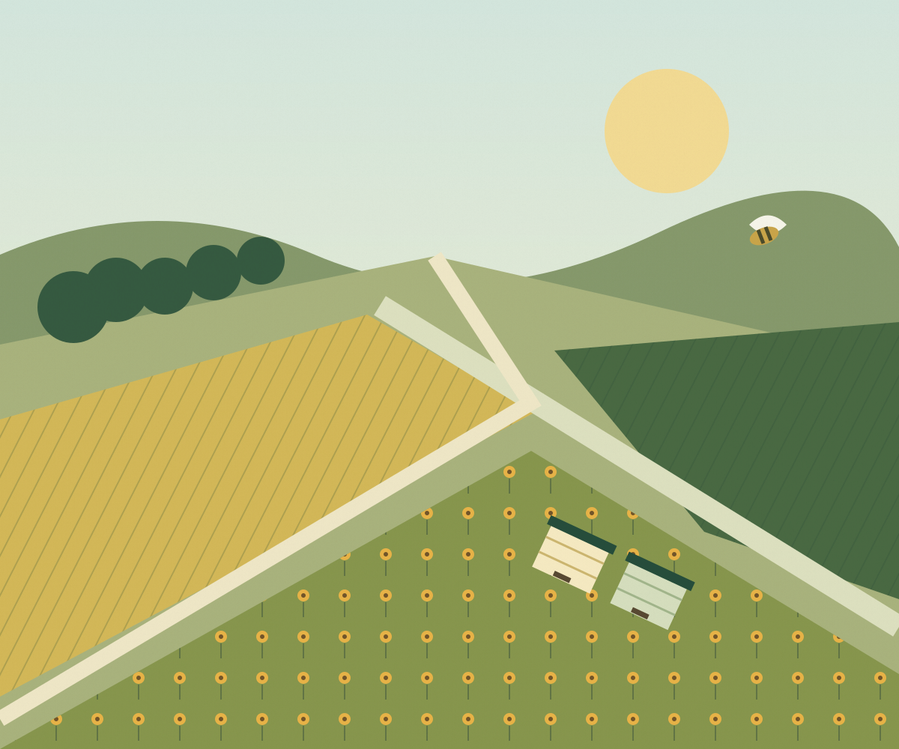

Поле или возможности пасеки
Аграрий отмечает поле и сроки. Пчеловод указывает доступные семьи и радиус перевозки.
Помогаем аграриям и пчеловодам согласовать опыление: найти друг друга, выбрать сроки и обсудить условия с координатором.
Вся Россия в одной системе. Доступность приёма настраивается для каждого региона.

Подбор учитывает культуру, сезон, расстояние и количество семей. Совпадение на сайте ещё не создаёт договорных обязательств.
Аграрий отмечает поле и сроки. Пчеловод указывает доступные семьи и радиус перевозки.
Если цены отличаются, предложение сохраняется для переговоров. Минимальная цена пчеловода не публикуется.
Контакты передаются на разрешённом основании. Договор, перевозка и безопасность пчёл согласуются отдельно.
Откройте карточку поля или отфильтруйте предложения. Реальных заказов здесь пока нет. Черновики других пользователей не показываются.
Проверьте сценарий на вымышленных данных. Контакт в тестовой заявке подставляется системой; настоящие телефоны и имена не принимаются.
Переключение ролей — только для проверки доступа в демонстрации. Это не регистрация реального пользователя.
Нажмите «Рисовать» и отметьте минимум три точки. В этом режиме карта не перетаскивается. После завершения можно двигать вершины или изменять координаты с клавиатуры.
Порядок: долгота (longitude), затем широта (latitude). Первая точка будет повторена при замыкании. Кнопки и поля доступны с клавиатуры.
Архитектура и справочник рассчитаны на все регионы. Администратор может включить регион, отключить приём или указать проверенного внешнего координатора. В демонстрации активна Самарская область. Это не заявление о наличии команды во всех регионах.
Черновик доступен владельцу и уполномоченным сотрудникам. Для точного контура нужно отдельно выбрать аудиторию и подтвердить публикацию. Телефон, имя и данные пасеки в публичную карту не входят.
Нет. Заявка и автоматическое совпадение не создают обязательств. Стороны согласуют количество семей, сроки, перевозку, оплату и безопасность пчёл отдельно.
В тестовой версии его указывает аграрий. Площадь по контуру рассчитывается отдельно от заявленной площади. Норма семей на гектар требует обоснования для культуры и условий конкретного поля.
Подходящая по другим параметрам пара остаётся в подборе с объяснением разницы. Координатор может предложить обсуждение условий обеим сторонам. Минимальные цены пчеловодов не публикуются.
Пока нет. Нужны подтверждённые оператор ПД, инфраструктура и правовые документы, техническая приёмка и отдельное разрешение владельца на реальный запуск.
Контакт владельца проекта для вопросов о площадке. Региональные координаторы будут показаны только после подтверждения.
Галдин Виталий Владимирович+7 917 954-46-95
МТС · контакт проекта
+7 937 208-23-30
Дополнительный телефон